I’ve just finished my first Gephi plugin, which distorts a geographically laid out network to emphasize network distance. The NBM can be found here and the source code is on GitHub. The layout takes the XY coordinates of the node and maintains their angle from a defined central node but increases the distance to match network distance. This is better shown than written. It was created for Walter Scheidel, who wanted to see how the transportation network of Imperial Rome would look if subject to the same transformations he’d seen applied to the London Subway network.
To demonstrate its function, here’s the land transportation routes in Imperial Rome:
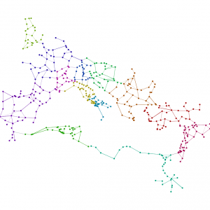
The plugin, known as TubeMap Layout in honor of Tom Cardin’s original experiment, gives you a few options:
- Scale simply sets the pixel size of the layout
- Center Node is the Label of the node you want to set as the 0,0 point
- Extrapolate allows you to work off of existing positions and is explained in more detail below
- Log Scale allows you to output the results logarithmically, which can be seen in action below
- XCoord is the field from your data you’ll be using to plot the X Axis–typically your latitude field
- YCoord is the field from your data you’ll be using to plot the Y Axis–typically your longitude field
To demonstrate, if we set the “center” at Rome the network above looks like this:
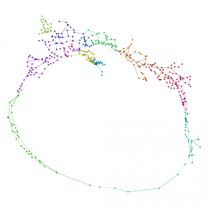
You’ll notice some geographic distortion because it’s simply plotting the XY coordinates without any projection, but otherwise we see the distortion of the network based on network distance from Rome while maintaining the angle of the point in relation to your “center”. As such, every point in the above visualization is as far from Rome as its actual network distance. Another way to see this is to color the sites by network distance and superimpose the results on a series of concentric rings, the first set to 300km distance and then doubling in distance after that:
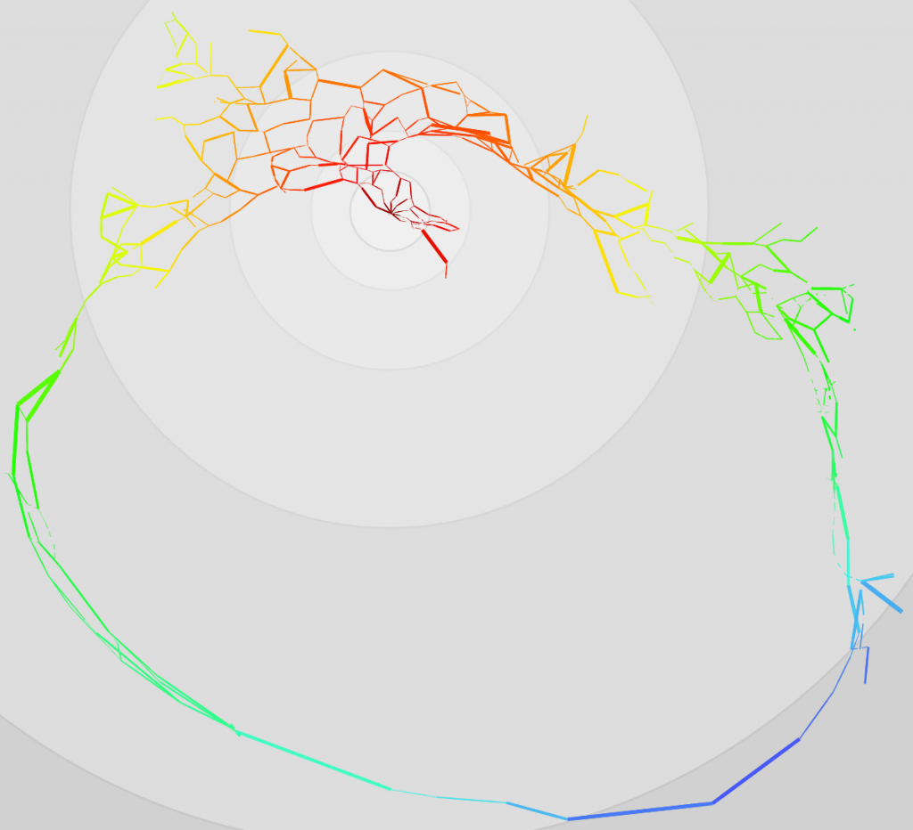
Everything of the same color in the above map is the same network distance from Rome. Since we have no sea routes in this network, this makes North Africa and Egypt extremely far from Rome. TubeMap Layout treats edge weight as distance, and so the above distances are based on actual calculated lengths of historical Roman roads, but the layout will also work on networks that only track “jumps”, such as this network of US Airports:
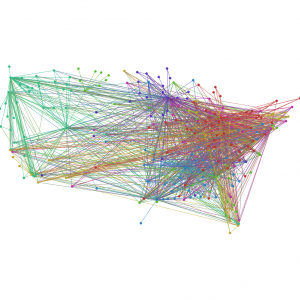
If we run TubeMap with a major hub like Salt Lake City International (By typing SLC in the “Center Node” field), we get this:
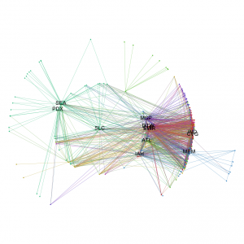
Whereas the same network centered on JFK looks like this:
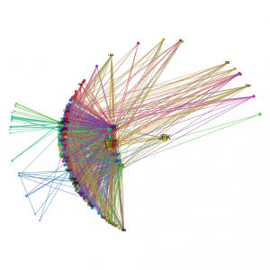
The log-mode option gives a more exaggerated view of the network, with distant places converging at the horizon and nearby geographies hinted at, though exaggerated. The Italian peninsula, the Bosporus, England and the Nile all dominate in this case, with the remainder of the empire distant and crowded.
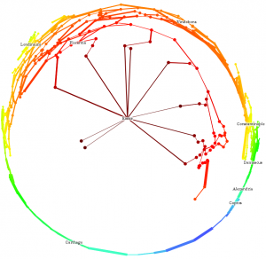
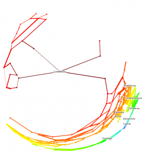
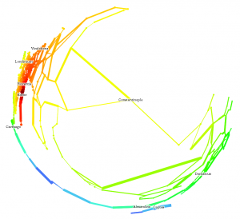
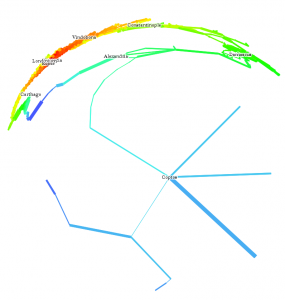
Finally, the plugin gives an Extrapolate option, which will run the same transformation on the network as it sits in Gephi. This way one could lay the network out using Yifan Hu or ForceAtlas2 and then run TubeMap to emphasize the network distance.
Below are a few more examples of how it works, using the network of Rome.
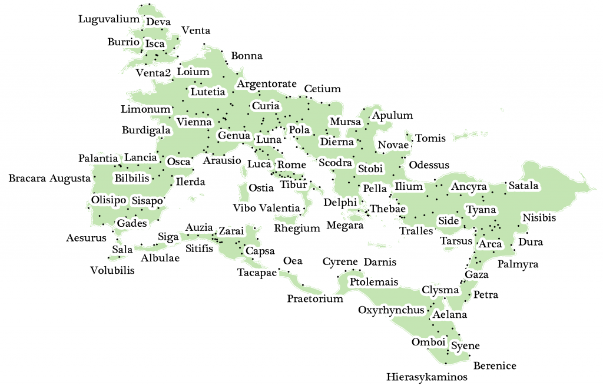
A traditional map of Rome showing some of the sites in this network
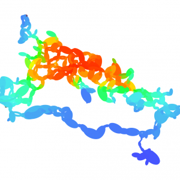
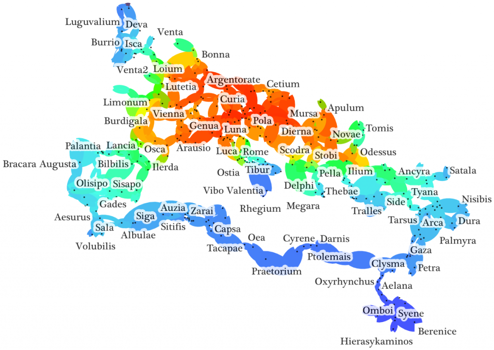
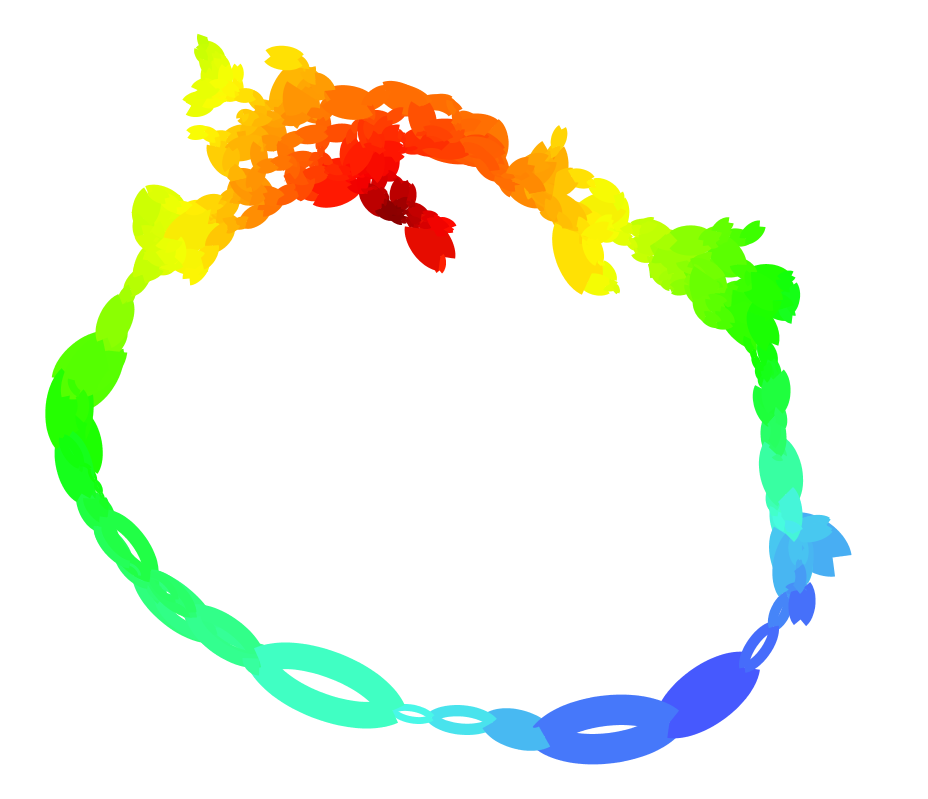
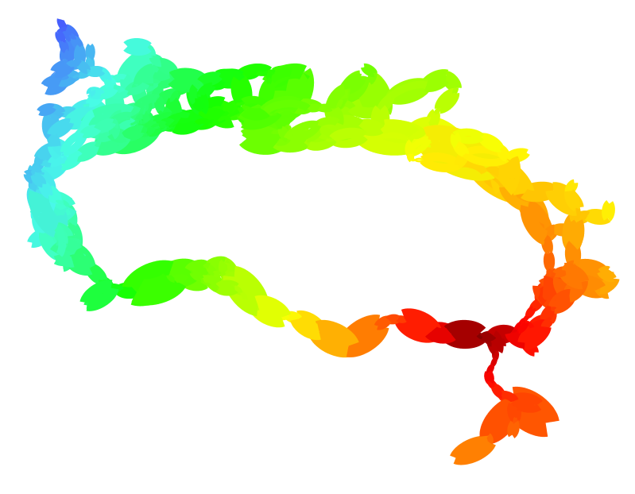
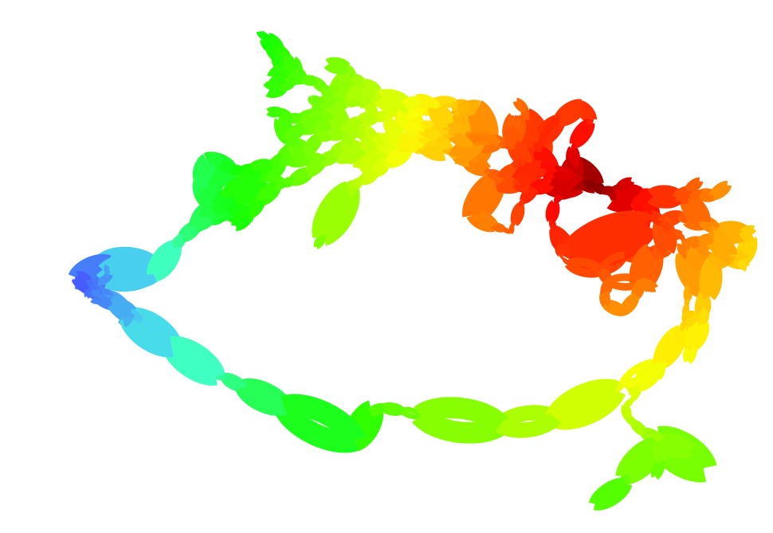
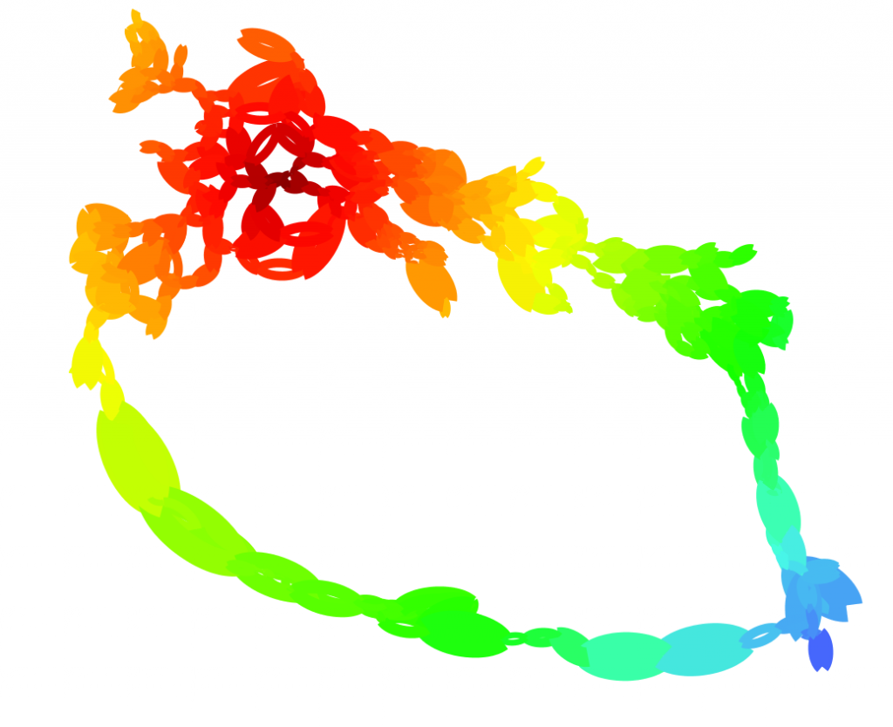
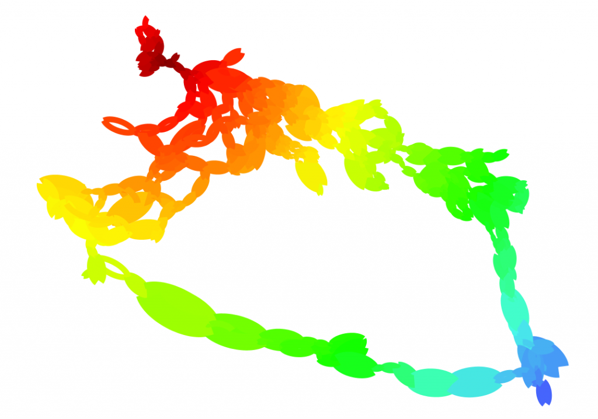